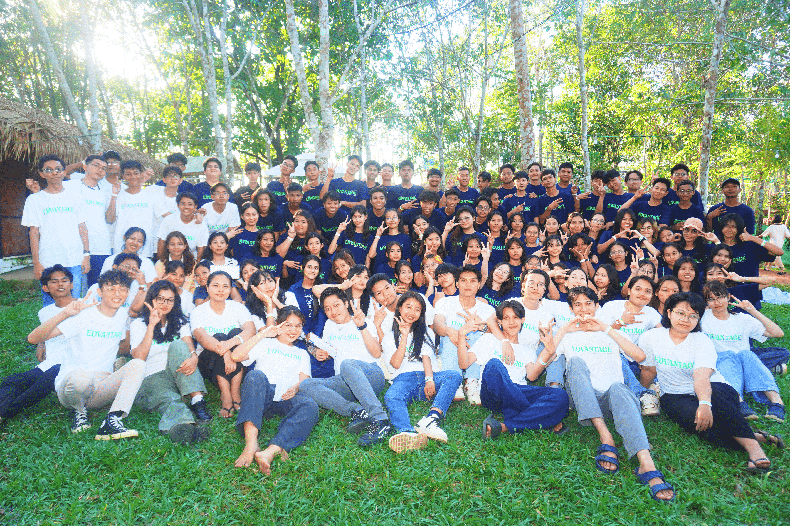
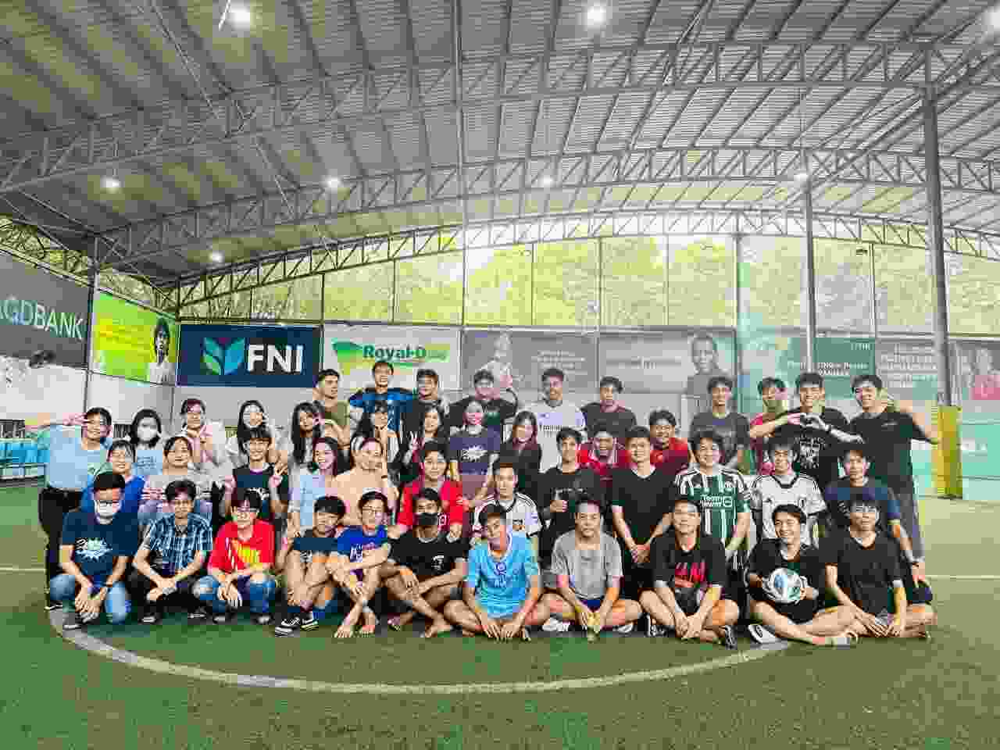

Field Day After JLPT
After completing the JLPT exam, we organize a fun Field Day on the following day. It is a time for students to relax, enjoy activities, and celebrate their hard work together.
Water Festival Celebration
Every April, we celebrate the Water Festival with our students. It is a joyful event where everyone enjoys traditional water activities and creates unforgettable memories.
Edvantage FC
Edvantage FC is our school football club, organized and held within our campus. Students can join, play together, and build teamwork through sports.
Gomi Zero Day
Gomi Zero Day is a special activity where students work together to clean and protect the environment. Through this event, we learn the importance of cleanliness, responsibility, and caring for our community.